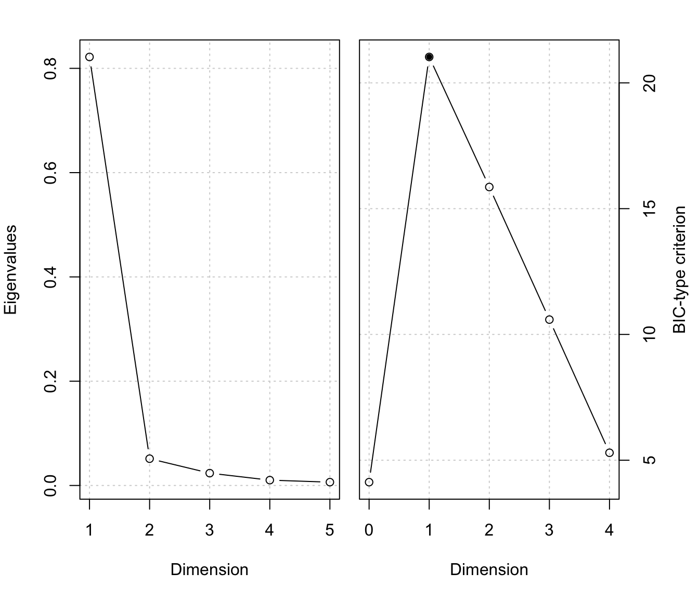
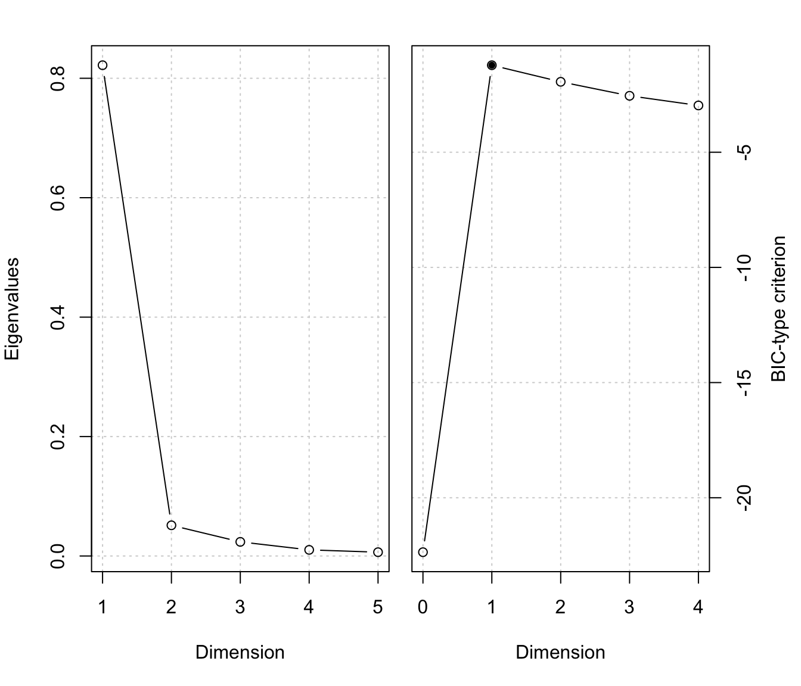

msir.bic.RdBIC-type criterion for selecting the dimensionality of a dimension reduction subspace.
msir.bic(object, type = 1, plot = FALSE) bicDimRed(M, x, nslices, type = 1, tol = sqrt(.Machine$double.eps))
| object | a |
|---|---|
| plot | if |
| M | the kernel matrix. See details below. |
| x | the predictors data matrix. See details below. |
| type | See details below. |
| nslices | the number of slices. See details below. |
| tol | a tolerance value |
This BIC-type criterion for the determination of the structural dimension selects \(d\) as the maximizer of $$G(d) = l(d) - Penalty(p,d,n)$$ where \(l(d)\) is the log-likelihood for dimensions up to \(d\), \(p\) is the number of predictors, and \(n\) is the sample size. The term \(Penalty(p,d,n)\) is the type of penalty to be used:
type = 1: \(Penalty(p,d,n) = -(p-d) \log(n)\)
type = 2: \(Penalty(p,d,n) = 0.5 C d (2p-d+1)\), where \(C = (0.5 \log(n) + 0.1 n^(1/3))/2 nslices/n\)
type = 3: \(Penalty(p,d,n) = 0.5 C d (2p-d+1)\), where \(C = \log(n) nslices/n\)
type = 4 \(Penalty(p,d,n) = 1/2 d \log(n)\)
Returns a list with components:
eigenvalues
log-likelihood
BIC-type criterion
selected dimensionality
Zhu, Miao and Peng (2006) "Sliced Inverse Regression for CDR Space Estimation", JASA.
Zhu, Zhu (2007) "On kernel method for SAVE", Journal of Multivariate Analysis.
Luca Scrucca luca.scrucca@unipg.it
# 1-dimensional symmetric response curve n <- 200 p <- 5 b <- as.matrix(c(1,-1,rep(0,p-2))) x <- matrix(rnorm(n*p), nrow = n, ncol = p) y <- (0.5 * x%*%b)^2 + 0.1*rnorm(n) MSIR <- msir(x, y) msir.bic(MSIR, plot = TRUE)#> $evalues #> [1] 0.596802911 0.164955963 0.046004957 0.022662883 0.005183818 #> #> $l #> [1] -14.236536821 -1.356590671 -0.129323007 -0.026637771 -0.001338973 #> #> $crit #> d=0 d=1 d=2 d=3 d=4 #> 12.255050 19.836679 15.765629 10.569997 5.296978 #> #> $d #> [1] 1 #>#> -------------------------------------------------- #> Model-based SIR #> -------------------------------------------------- #> #> Slices: #> 1 2 3 4 5 6 #> GMM XXX XXX EVE XII XII EII #> Num.comp. 1 1 2 1 1 2 #> Num.obs. 33 33 11|22 33 33 22|13 #> #> Estimated basis vectors: #> Dir1 Dir2 Dir3 Dir4 Dir5 #> x1 -0.7165116 -0.067982 0.022793 -0.67001 0.22296 #> x2 0.6962322 0.119497 -0.029979 -0.66051 0.18741 #> x3 -0.0075834 0.818516 0.398506 0.20003 0.39740 #> x4 -0.0214684 0.232559 0.405193 -0.23973 -0.83487 #> x5 -0.0367894 0.506998 -0.821945 -0.13161 -0.24540 #> #> Dir1 Dir2 Dir3 Dir4 Dir5 #> Eigenvalues 0.5968 0.16496 0.046005 0.022663 5.1838e-03 #> Cum. % 71.4212 91.16195 96.667502 99.379637 1.0000e+02 #> #> Structural dimension: #> 0 1 2 3 4 #> BIC-type criterion 12.2551 19.8367* 15.7656 10.57 5.29698msir.bic(MSIR, type = 3, plot = TRUE)#> $evalues #> [1] 0.596802911 0.164955963 0.046004957 0.022662883 0.005183818 #> #> $l #> [1] -14.236536821 -1.356590671 -0.129323007 -0.026637771 -0.001338973 #> #> $crit #> d=0 d=1 d=2 d=3 d=4 #> -14.236537 -2.416254 -2.036717 -2.569830 -2.968397 #> #> $d #> [1] 2 #>#> -------------------------------------------------- #> Model-based SIR #> -------------------------------------------------- #> #> Slices: #> 1 2 3 4 5 6 #> GMM XXX XXX EVE XII XII EII #> Num.comp. 1 1 2 1 1 2 #> Num.obs. 33 33 11|22 33 33 22|13 #> #> Estimated basis vectors: #> Dir1 Dir2 Dir3 Dir4 Dir5 #> x1 -0.7165116 -0.067982 0.022793 -0.67001 0.22296 #> x2 0.6962322 0.119497 -0.029979 -0.66051 0.18741 #> x3 -0.0075834 0.818516 0.398506 0.20003 0.39740 #> x4 -0.0214684 0.232559 0.405193 -0.23973 -0.83487 #> x5 -0.0367894 0.506998 -0.821945 -0.13161 -0.24540 #> #> Dir1 Dir2 Dir3 Dir4 Dir5 #> Eigenvalues 0.5968 0.16496 0.046005 0.022663 5.1838e-03 #> Cum. % 71.4212 91.16195 96.667502 99.379637 1.0000e+02 #> #> Structural dimension: #> 0 1 2 3 4 #> BIC-type criterion -14.2365 -2.41625 -2.03672* -2.56983 -2.9684